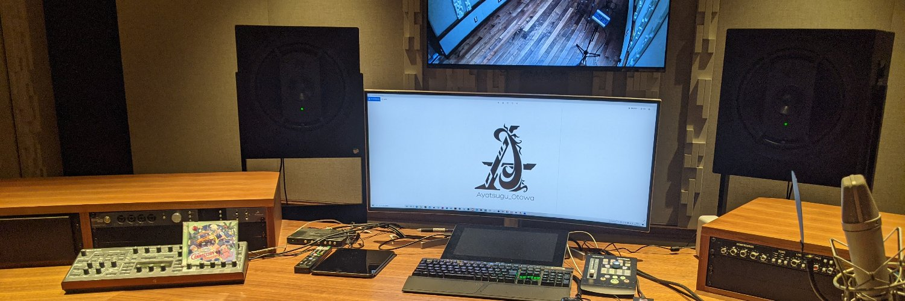

会津若松発、音ゲー曲やアニソンからクラブミュージックまで何でも流れる オールジャンルでフリーダムなイベント第21回開幕!
| 日時 | 2022/7/17(日) 20:00~25:00 |
|---|---|
| 場所 | Redink underground(福島県会津若松市) |
| 料金 | ￥1,000(1drink付) |

音ゲー好きが高じて音楽を作り始めた結果、本業になってしまった作編曲家。 代表曲はMUSEDASHの「Lights of Muse」。
多数の音楽ゲームで曲が収録されています。
ハードなサウンドや音ゲー楽曲、突然挟まるアニソン曲と色々バキバキに好きな曲をぶち込みます。 対戦よろしくお願いします。
Follow